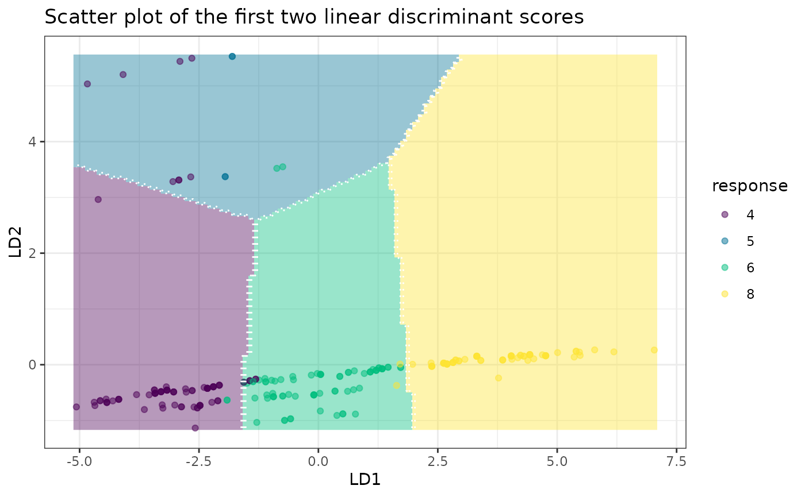

The folda package is an R modeling tool designed for
fitting Forward Stepwise Linear Discriminant Analysis (LDA) and
Uncorrelated Linear Discriminant Analysis (ULDA). If you’re unfamiliar
with stepwise LDA or ULDA, please refer to the following resources:
For stepwise LDA using Wilks’ Lambda, see Section 6.11.1 in Methods of Multivariate Analysis, Third Edition by Alvin C. Rencher and William F. Christensen (2012).
For ULDA, refer to Ye, J., & Yu, B. (2005). Characterization of a family of algorithms for generalized discriminant analysis on undersampled problems. Journal of Machine Learning Research, 6(4). Link.
For a combination of ULDA and forward LDA using Pillai’s trace, see Wang, S. (2024). A New Forward Discriminant Analysis Framework Based on Pillai’s Trace and ULDA. arXiv preprint arXiv:2409.03136. Link.
Why use the folda package?
If you’ve ever been frustrated by the warnings and errors from
MASS::lda(), you will appreciate the ULDA implementation in
folda(). It offers several key improvements:
No more “constant within group” errors! ULDA can handle constant columns and perfect separation of groups.
Automatic missing value handling! The implementation seamlessly integrates automatic missing value imputation during both training and testing phases.
Fast! ULDA is implemented using the Generalized Singular Value Decomposition (GSVD) method, which diagonalizes both within-class and total scatter matrices simultaneously, offering a speed advantage over the sequential diagonalization used in
MASS::lda()(see Howland et al., 2003 for more details). We have also rewritten the matrix decomposition modules (SVD, QR) usingRcppEigen, further improving computational efficiency by leveraging optimized C++ code.Better visualization!
foldausesggplot2to provide visualizations of class separation in projected 2D spaces (or 1D histograms), offering valuable insights.
For the forward LDA implementation, folda offers the
following advantages over the classical framework:
No issues with multicollinearity or perfect linear dependency! Since
folda()is built on ULDA, it effectively solves for the scaling matrix.Handles perfect separation and offers greater power! The classical approach using Wilks’ Lambda has known limitations, including premature stopping when some (not all) groups are perfectly separated. Pillai’s trace, as used in
folda(), not only effectively addresses perfect separation, but has also been shown to generally have greater statistical power than Wilks’ Lambda (Rencher et al., 2002).
Basic Usage of folda
library(folda)
mpg <- as.data.frame(ggplot2::mpg) # Prepare the data
datX <- mpg[, -5] # All predictors without Y
response <- mpg[, 5] # we try to predict "cyl" (number of cylinders)Build a ULDA model with all variables:
fit <- folda(datX = datX, response = response, subsetMethod = "all")Build a ULDA model with forward selection via Pillai’s trace:
fit <- folda(datX = datX, response = response, subsetMethod = "forward", testStat = "Pillai")
print(fit) # 6 out of 11 variables are selected, displ is the most important among them
#>
#> Overall Pillai's trace: 1.325
#> Associated p-value: 4.636e-74
#>
#> Prediction Results on Training Data:
#> Refitting Accuracy: 0.9188
#> Gini Index: 0.7004
#>
#> Confusion Matrix:
#> Actual
#> Predicted 4 5 6 8
#> 4 69 0 3 0
#> 5 8 4 2 0
#> 6 4 0 74 2
#> 8 0 0 0 68
#>
#> Group means of LD scores:
#> LD1 LD2 LD3
#> 4 -3.05298379 -0.02700248 -0.3555829
#> 5 -1.87744449 4.45014946 0.8156167
#> 6 -0.06757888 -0.28356907 0.5911862
#> 8 3.71628852 0.09697943 -0.3023424
#>
#> Forward Selection Results:
#> var statOverall statDiff threshold
#> 1 displ 0.873393 0.87339300 0.06545381
#> 2 modelnew beetle 1.029931 0.15653777 0.05673510
#> 3 modeljetta 1.141651 0.11172064 0.05496185
#> 4 modelcaravan 2wd 1.210165 0.06851331 0.05363507
#> 5 classmidsize 1.263449 0.05328468 0.05276500
#> 6 cty 1.325255 0.06180560 0.05194279Plot the results:
plot(fit, datX = datX, response = response)
Make predictions:
head(predict(fit, datX, type = "response"))
#> [1] "4" "4" "4" "4" "6" "4"
head(predict(fit, datX, type = "prob")) # Posterior probabilities
#> 4 5 6 8
#> 1 0.9966769 7.475058e-08 0.0033230408 7.023764e-12
#> 2 0.9994438 1.401133e-08 0.0005562131 5.338710e-13
#> 3 0.9970911 3.835722e-08 0.0029088506 1.738154e-11
#> 4 0.9983963 2.196016e-08 0.0016037009 7.365641e-12
#> 5 0.3122116 6.809673e-07 0.6877815595 6.173116e-06
#> 6 0.5995781 4.275271e-07 0.4004193019 2.123291e-06Comparison of Pillai’s Trace and Wilks’ Lambda
Here, we compare their performances in a scenario where one group of classes is perfectly separable from another, a condition under which Wilks’ Lambda performs poorly. Now let’s predict the model of the car.
fitW <- folda(mpg[, -2], mpg[, 2], testStat = "Wilks")
fitW$forwardInfo
#> var statOverall statDiff threshold
#> 1 manufactureraudi 0 0 0.7338759Wilks’ Lambda only selects manufacturer-audi, since it can separate a4, a4 quattro, and a6 quattro from other models. However, it unexpectedly stops since the Wilks’ Lambda = 0, leading to a refitting accuracy of 0.0812.
fitP <- folda(mpg[, -2], mpg[, 2], testStat = "Pillai")
fitP$forwardInfo
#> var statOverall statDiff threshold
#> 1 manufacturerdodge 1.00000 1.0000000 0.2654136
#> 2 manufacturervolkswagen 2.00000 1.0000000 0.2599086
#> 3 manufactureraudi 3.00000 1.0000000 0.2543730
#> 4 manufacturerford 4.00000 1.0000000 0.2488055
#> 5 manufacturerchevrolet 5.00000 1.0000000 0.2432051
#> 6 manufacturerhonda 6.00000 1.0000000 0.2375706
#> 7 manufacturerhyundai 7.00000 1.0000000 0.2319008
#> 8 manufacturerjeep 8.00000 1.0000000 0.2261943
#> 9 manufacturerland rover 9.00000 1.0000000 0.2204496
#> 10 manufacturerlincoln 10.00000 1.0000000 0.2146652
#> 11 manufacturermercury 11.00000 1.0000000 0.2088394
#> 12 manufacturernissan 12.00000 1.0000000 0.2029702
#> 13 manufacturerpontiac 13.00000 1.0000000 0.1970556
#> 14 manufacturersubaru 14.00000 1.0000000 0.1910933
#> 15 drvf 15.00000 1.0000000 0.1850810
#> 16 drvr 16.00000 1.0000000 0.1785056
#> 17 classminivan 17.00000 1.0000000 0.1723677
#> 18 classpickup 18.00000 1.0000000 0.1661696
#> 19 classsuv 19.00000 1.0000000 0.1599071
#> 20 classmidsize 19.93159 0.9315947 0.1535761
#> 21 classsubcompact 20.74392 0.8123229 0.1475693
#> 22 classcompact 21.71027 0.9663480 0.1421899
#> 23 displ 21.96954 0.2592742 0.1358348
#> 24 transauto(s5) 22.16831 0.1987676 0.1335988
#> 25 cty 22.35530 0.1869879 0.1316772
#> 26 flp 22.52155 0.1662562 0.1297761On the other hand, Pillai’s trace selects 26 variables in total and
the refitting accuracy is 0.9231. Additionally, MASS::lda()
would throw an error in this scenario due to the “constant within
groups” issue.
# MASS::lda(model~., data = mpg)
#> Error in lda.default(x, grouping, ...) :
#> variables 1 2 3 4 5 6 7 8 9 10 11 12 13 14 27 28 37 38 40 appear to be constant within groupsHandling Missing Values
The default method to handle missing values are
c(medianFlag, newLevel). It means that for numerical
variables, missing values are imputed with the median, while for
categorical variables, a new level is assigned to represent missing
values. Additionally, for numerical variables, we generate missing value
indicators to flag which observations had missing data.
Two key functions involved in this process are
missingFix() and getDataInShape():
missingFix()imputes missing values and outputs two objects: the imputed dataset and a missing reference, which can be used for future imputations. Any constant columns remains in the imputed dataset will be removed.-
getDataInShape()takes new data and the missing reference as inputs, and returns an imputed dataset. This function performs several tasks:- Redundant column removal: Any columns in the new data that are not present in the reference are removed.
- Missing column addition: Columns that are present in the reference but missing from the new data are added and initialized according to the missing reference.
- Flag variable handling: Missing value indicators (flag variables) are properly updated to reflect the missing values in the new data.
- Factor level updating: For categorical variables, factor levels are updated to match the reference. If a factor variable in the new data contains levels that are not present in the reference, those levels are removed, and the values are set to match the reference. Redundant levels are also removed.
# Create a dataset with missing values
(datNA <- data.frame(X1 = rep(NA, 5), # All values are NA
X2 = factor(rep(NA, 5), levels = LETTERS[1:3]), # Factor with all NA values
X3 = 1:5, # Numeric column with no missing values
X4 = LETTERS[1:5], # Character column
X5 = c(NA, 2, 3, 10, NA), # Numeric column with missing values
X6 = factor(c("A", NA, NA, "B", "B"), levels = LETTERS[1:3]))) # Factor with missing values
#> X1 X2 X3 X4 X5 X6
#> 1 NA <NA> 1 A NA A
#> 2 NA <NA> 2 B 2 <NA>
#> 3 NA <NA> 3 C 3 <NA>
#> 4 NA <NA> 4 D 10 B
#> 5 NA <NA> 5 E NA BImpute missing values and create a missing reference:
(imputedSummary <- missingFix(datNA))
#> $data
#> X3 X4 X5 X6 X5_FLAG
#> 1 1 A 3 A 1
#> 2 2 B 2 new0_0Level 0
#> 3 3 C 3 new0_0Level 0
#> 4 4 D 10 B 0
#> 5 5 E 3 B 1
#>
#> $ref
#> X3 X4 X5 X6 X5_FLAG
#> 1 3 A 3 new0_0Level 1X1 and X2 are removed because they are constant (i.e., all values are NA). X3 and X4 remain unchanged. X5 is imputed with the median (3), and a new column X5_FLAG is added to indicate missing values. X6 is imputed with a new level ‘new0_0Level’.
Now, let’s create a new dataset for imputation.
(datNAnew <- data.frame(X1 = 1:3, # New column not in the reference
X3 = 1:3, # Matching column with no NAs
X4 = as.factor(c("E", "F", NA)), # Factor with a new level "F" and missing values
X5 = c(NA, 2, 3))) # Numeric column with a missing value
#> X1 X3 X4 X5
#> 1 1 1 E NA
#> 2 2 2 F 2
#> 3 3 3 <NA> 3Apply the missing reference to the new dataset:
getDataInShape(datNAnew, imputedSummary$ref)
#> X3 X4 X5 X6 X5_FLAG
#> 1 1 E 3 new0_0Level 1
#> 2 2 A 2 new0_0Level 0
#> 3 3 A 3 new0_0Level 0X1 is removed because it does not exist in the missing reference. X3 remains unchanged. “F” is a new level in X4, so it is removed and imputed with “A” (the most frequent level) along with other missing values. X5 is imputed, and a new column X5_FLAG is added to indicate missing values. X6 is missing from the new data, so it is initialized with the level “new0_0Level”.
Next, we show an example using folda with the airquality
dataset. First, let’s check which columns in airquality have missing
values:
sapply(airquality, anyNA) # Ozone and Solar.R have NAs
#> Ozone Solar.R Wind Temp Month Day
#> TRUE TRUE FALSE FALSE FALSE FALSEOur response variable is the 5th column (Month):
fitAir <- folda(airquality[, -5], airquality[, 5])The generated missing reference is:
fitAir$misReference
#> Ozone Solar.R Wind Temp Day Ozone_FLAG Solar.R_FLAG
#> 1 31.5 205 9.7 79 16 1 1To make prediction:
predict(fitAir, data.frame(rep(NA, 4)))
#> [1] "6" "6" "6" "6"Notice that no issues arise during predicting, even when the new data contains nothing but missing values.
Additional Features
correction: If you’re less concerned about controlling the type I error and prefer a more aggressive variable selection process, settingcorrection = FALSEmay result in better testing accuracy, particularly when the number of columns exceeds the number of rows.alpha: If your goal is to rank all variables, setalpha = 1. This ensures that no variables are filtered out during the selection process.misClassCost: This parameter is useful in situations where misclassifying certain classes has a more severe impact compared to others. Below is an example demonstrating how to incorporate different misclassification costs.
The iris dataset is a famous dataset with three species of flowers:
table(iris$Species, dnn = NULL)
#> setosa versicolor virginica
#> 50 50 50Suppose misclassifying versicolor into other species is very costly. A potential misclassification cost matrix might look like this:
This means that misclassifying versicolor to other species is 100 times more severe than misclassifying other species to versicolor. First, let’s fit the model with equal misclassification costs and specified misclassification costs:
fitEqualCost <- folda(iris[, -5], response = iris[, 5])
fitNewCost <- folda(iris[, -5], response = iris[, 5], misClassCost = misClassCost)The prediction distributions with equal misclassification costs:
The prediction distributions with specified misclassification costs:
As shown, the model tends to predict versicolor more often due to the higher misclassification cost associated with predicting it incorrectly.
References
Howland, P., Jeon, M., & Park, H. (2003). Structure preserving dimension reduction for clustered text data based on the generalized singular value decomposition. SIAM Journal on Matrix Analysis and Applications, 25(1), 165-179.
Rencher, A. C., & Christensen, W. F. (2002). Methods of multivariate analysis (Vol. 727). John Wiley & Sons.